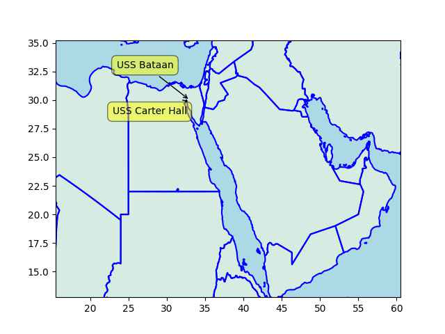

Week 32
CCJ: "Hitting the market in 2025, the recently announced Kenworth T680 FCEV is the culmination of seven years that Kenworth has been collaborating with Toyota on prototype vehicles. It combines Toyota's second generation hydrogen fuel cell stack with the T680 Next Gen. The T680 FCEV is a Class 8 tractor rated up to 82,000 pounds and stores 60 kilograms of hydrogen on board that powers a 310 kilowatt motor and it's 415 horsepower gives you all the power you need to do your regional or long haul driving. The range is 450 miles and can refuel it in 20 to 30 minutes.
Informed Comment: "[T]his country can no longer boast of having anything like the world’s best educational outcomes, or healthcare system, or the most advanced and safest infrastructure, or the best democratic politics.. [but] Americans could certainly brag about one thing this country has beyond compare: the most expensive military around and possibly ever. No country even comes close to our commitment of funds to wars, weapons.. and global dominance. Indeed, the Pentagon’s budget for “defense” in 2023 exceeds that of the next 10 countries (mostly allies!) combined.
Illich: "Beyond a certain speed, motorized vehicles create remoteness which they alone can shrink. They create distances for all and shrink them for only a few. A new dirt road through the wilderness brings the city within view, but not within reach, of most Brazilian subsistence farmers. The new expressway expands Chicago, but it sucks those who are well-wheeled away from a downtown that decays into a ghetto"
"Store-bought sauerkraut is often treated with preservatives, meaning it does not offer the same health effects as homemade [one]"
No need to use funky salts and a little mashed apple on top also adds flavor. Guten Appetit
$7 for pickled cabbage.. I thought 'robbery', so made some. T'was easy and cost 20 cents. Potent stuff. Full of probiotics they say?
Firstpost: "Germany Woos Taiwan: TSMC to set up $11 billion chip-making fab in Dresden, first of its kind in EU"
BNN Bloomberg: "California Green Hydrogen Machine Maker [Verdagy] Raises $73 Million"
Doctorow: "Tesla is having its own Dieselgate scandal. A stunning investigation by Steve Stecklow and Norihiko Shirouzu for Reuters reveals how Tesla was able to create its own demon-haunted car, which systematically deceived drivers about its driving range, and the increasingly desperate measures the company turned to as customers discovered the ruse"
F24: "Russia to launch first lunar mission in nearly half a century"
Firstpost: "NASA had initially planned to launch the Artemis 3 mission to the moon in December 2025, and land astronauts on the south pole. However, now, NASA believes that they may not be able to launch the mission, essentially because of SpaceX..
SpaceX.. has secured the contract for the landing system, which is based on a version of its Starship rocket prototype. This Starship rocket, however, remains significantly distant from being fully prepared. An orbital test flight of the Starship resulted in a dramatic explosion in April... Jim Free.. expressed apprehension due to the absence of actual launches. He emphasized that multiple successful launches are required before the rocket can be considered ready"
I bet on US side Dubya spurred that shit talked LatAm countries into it, to "fight drugs". What a dildo.
Wiki: "[Post 2000] Arrests of key cartel leaders, particularly in the Tijuana and Gulf cartels, have led to increasing drug violence as cartels fight for control of the trafficking routes into the United States"
South of the US border when governments wanted to fight drug cartels, they probably picked off the largest visible players, trying to end oligapolies, monopolies. But this is an area where you do not want competition, a lively market, "better prices", "satisfied customers" - you want an oligarchy, preferably a monopoly in the drug business. Government then could reach a modus vivendi with that player, one cartel supplies the much demanded product (no way around that), hopefully keeping the price high, small fish do not fight eachother for access, drug related crimes reduce.
The Local: "France plans 70% 'supertax' on fuel for private jets"
Bloomberg: "A group of electric utilities and producers is throwing its support behind the Biden administration’s plan for throttling greenhouse emissions from the nation’s coal and gas power plants. The Energy Strategy Coalition, whose members include National Grid USA, NextEra Energy Inc. and Pacific Gas and Electric Co., argues the [EPA] is on solid legal footing tying proposed requirements to carbon-capture technology and cleaner-burning hydrogen"
TASS: "Pretoria backs Iran's accession to BRICS — South African President"
I use it all the time, great source of open data, code #FOSS
"@openstreetmap@en.osm.town
It's OpenStreetMap's Birthday today!"

"@straphanger@urbanists.social
'A city is where people come to work, raise families, spend their money, walk in the evening. It's not a traffic corridor.' —John Norquist"
Firstpost: "Norway to fine Meta nearly $100,000 a day from 14 August over privacy breaches"
"Work for us, we'll pay you in magic beans". Right.
"@_dm@infosec.exchange
[✓] Recruiter emailing me at my work address
[✓] 'Web3' company
[✓]Offering a "generous" 30% pay cut
[✓]Paid in 'token allocation'"
"@BrentToderian@mastodon.online
A typical European car is parked 92% of the time. It spends 1/5th of its driving time looking for parking. Its 5 seats only move 1.5 people. 86% of its fuel never reaches the wheels.. Sound efficient?"

"@ClimateNewsNow@federated.press
By 2050 there will be more plastic than fish in the oceans. It’s an environmental crisis that’s been in the making for nearly 70 years"
"@Hypx@mastodon.social
Bosch Starts Volume Production Of Hydrogen Fuel-Cell Power Module"
In terms of historic pollution US has been worst
F24: "Brazil's Lula urges rich countries to do their part to fund fight against climate change"
Owner Driver: "Major freight and transport operator Toll Group has announced the introduction of its first hydrogen-powered long-haul truck in China, marking a significant milestone in the company’s commitment to sustainable transport solutions.. Toll Group says it will deploy the hydrogen truck for deliveries between warehouses in Shanghai, with the prime mover able to travel 300 km per trip and Toll expecting the technology to save up to 149 tonnes of carbon emissions annually"
H2 Central: "Governor Gavin Newsom has directed the Governor’s Office of Business and Economic Development (GO-Biz) to develop California’s Hydrogen Market Development Strategy, employing an all-of-government approach to building up California’s clean, renewable hydrogen market. It will closely resemble the Zero-Emission Vehicle Market Development Strategy to help California collectively move forward and deliver zero-emission benefits to all Californians.
'California is all in on clean, renewable hydrogen – an essential aspect of how we’ll power our future and cut pollution,' said Governor Newsom. 'This strategy will lay out the pathway for building a robust hydrogen market to help us fully embrace this source of clean energy'"
AP News: "[Battery] electric bus maker Proterra files for Chapter 11 bankruptcy protection"
Lindsay Graham and Ossoff supporting the same tech - that's great. Both old and new industries have much to gain from a clean fuel transition.
"[6/9] Sens. Ossoff & Graham Introduce Bipartisan Bills to Study Hydrogen for Aviation Industry, Strengthen American Energy Security"
Firstpost: "Niger’s tailors rush to make in demand Russian flags after coup"
TASS: "Russian international reserves up 1.3% in July to $589 bln — Central Bank"
F24: "Manila summoned Beijing's envoy Monday after the China Coast Guard blocked and water cannoned Philippine vessels in the disputed South China Sea"
Hartmann: "Before Reagan, ... CEOs who executed share buybacks just to artificially inflate stock prices could go to prison. FDR criminalized share buybacks in the early 1930s because they’re simply a form of stock price manipulation and were one of the main reasons for the stock market crash of 1929 that kicked off the Republican Great Depression...
[T]here’s nothing magical, normal, or 'natural' about national economies. They’re not the result of immutable laws, any more than the NFL’s rules for football are. The rules of marketplaces are created by governments, and governments decide who will benefit from those rules.
Today’s personal and corporate tax situation is very intentional, including its outcomes of massive inequality, mind-boggling riches in a few hands, and widespread poverty across the land"
"@dmoser@mastodon.social
🌳Before Vs. After in Vitoria-Gasteiz 🇪🇸"
![[-]](https://files.mastodon.social/media_attachments/files/110/852/749/547/643/712/original/89383931ef39a985.png){kind=link}
JW: "If a Cactus Can't Survive This, Neither Can You.. You might’ve seen recent headlines about saguaro cacti keeling over in Arizona after spending nearly a month above 110 degrees Fahrenheit. Not even a week later, The Washington Post ran this absurd story: 'Your body can build up tolerance to heat. Here’s how'"
{kind=link}
Maybe this is why the Chinese are interested in Alaska along with Russians. RU-CH want to invade Alaska so their people can move there, esp. the Chinese. Alaska is sparsely populated.
That confirms the earlier wet-bulb temparature map (the research below uses WBT as well). SE Asia already has it bad, it will probably get worse.
Earth.com: "China’s most populated region may become uninhabitable by 2070.. According to the study, China’s most populated and agriculturally significant region, known as the known as the North China Plain, could experience a repeated pattern of heat and humidity that people cannot survive for extended periods of time"

If you count Clooney The Flash had not one, not two, but three bleeping Bruce Wayne's. And a fourth in the whole DCU if we count Pattinson. They could not have enough of this jagoff billionaire, pre-reboot at least.
Movie did well it looks like..
u.boxofficemojo("Guardians of the Galaxy Vol. 3")
Out[1]:
{'Domestic Opening': '$118,414,021',
'Domestic': '$358,974,799',
'International': '$486,340,207',
'Worldwide Total': '$845,315,006',
'Release Date': 'April 13, 2023'}
What an half assed system.. With neighbor India being a democracy having same institutional heritage there is more expected of you - yet no cigar.. Either be China or India, make up your mind. Paki system is bizarre, military is not officially in control but tries to manipulate from behind the scenes all the time. Politicians have to look behind their shoulders constantly which makes them less of a politician. Same for Thailand.. Even Egypt is better off.. Their military makes a coup, the top general becomes civilian president, done. None of this part-in part-out behind-the-scenes bitch manipulation of bitch kabuki politics.
NYT: "Imran Khan Sentenced to Prison in Pakistan"
"@sru@mastodon.social
For the first time since 2018, I no longer hold #crypto. Made some gains on #BTC, but suffered large losses on #ETH and #SOL. These are some of the worst investments I ever made, and in hindsight, they were motivated mostly by FOMO. Lesson learned"
"@molly0xfff@hachyderm.io
pretty remarkable to see Coinbase making the argument that crypto is not like stocks, it's like baseball cards, American Girl dolls, or Beanie Babies
it's the future of finance! except when the SEC comes knocking, then it's just a harmless little toy, your honor"
"@kottke@botsin.space
When this species of water beetle gets eaten by a frog, rather than accepting its fate to be digested, it crawls through the frog's bowels and emerges through its butt. 'The quickest run from mouth to anus was just six minutes.'"
There were rumors MCU was a slavedriver when it came to VFX work - so now there is a backlash. It's a bitch. You can't Woke your way out of this one.
Variety: "Marvel VFX Artists Vote to Unionize"
Reuters: "Judge allows key US antitrust Google search claims to go trial"
The Walrus: "There Is No Housing Crisis.. Supply alone will not solve a problem that large sections of the population don’t want to fix.. Canada’s 'housing crisis' is a permanent state of affairs that harms people in, or in need of, rental housing; roughly one-third of the country’s households... Even 2020... was a good year for the industry. Banks and other mortgage providers create money, lend it, and charge interest on it. If that wasn’t already a sweet deal, the federal government assumes a share of the risk of these mortgages..
A housing system that serves all but one group is not in a state of crisis; it is one based on structural inequality and economic exploitation... Why, then, are 'housing crisis' and 'supply-side' arguments so prevalent?.. If we believe lack of supply is the cause of lack of housing affordability, the solution is building more... The.. argument serves a clear purpose: to sweeten the deal for developers and landlords...
There are many reasons for not treating housing as a market that arrives at an optimal balance. The most important is that land, on which housing is built, is a fixed resource. We cannot produce more of it"
The Guardian: "The number of outsourced government services that are failing to meet standards has risen sharply.. In what critics said was evidence of ministers failing to deliver high-quality public services, the number of contractors providing work judged to be 'inadequate' or 'requires improvement' jumped from 119 to 207 in a year – a 73% rise. That means 6.5% of all the targets set for government contracts were being missed"
"@The_Tim@mastodon.social
Personally I'm tired of billionaires.
'Billionaire Mike Bloomberg is tired of remote work excuses: "this has gone on too long"'"
Thanks to A. Hidalgo, the mayor of Paris (Socialist Party)
"@dmoser@mastodon.social
🌳Before Vs. After in Paris 🇫🇷"
{kind=link}
"rob pike@robpike@hachyderm.io
No, guys, they have not achieved 'net energy gain' because you're only counting the energy IN the laser, not the energy it takes to FIRE the laser, which is hundreds, maybe thousands of times more.
'US scientists achieve net energy gain for second time in nuclear fusion reaction The Guardian'"
US individualism seems to be a carefully managed endeavor - you are either guided towards a consumption domain where you "express" your individuality, identity through the things you buy, or sometimes -oddly enough- towards sects that are actually non-existent sub-cultures, ethnic or otherwise, where you could be further divided-and-ruled by the apparatus. A first generation "Lithuanian-American" could say he is proudly Lithuanian, expressing a differentiating factor about himself, an individuality when in fact culture code would suggest he is no different from anyone else, heritage being meaningless.
Gopal: "Is Barbie feminist? Not for all women.. The film’s a marketing success, but its limited vision doesn’t apply to most women, for whom the world is grim, not pink... At the end of the day, Barbie the movie, like the 240 types of Barbie made by Mattel, gives us little other than that American holy grail: individualism"
"A wind turbine without blades - Vortex wind turbines"
CNBC: "In June, Siemens Energy scrapped its profit forecast and warned that costly [$2.4 billion] failures at wind turbine subsidiary Siemens Gamesa could drag on for years, sending shares tumbling"
Face the Nation is pretty good.. the vibe is different than these angertainment, hipster cable shows. Good guests.
Ars Technica: "Angry Tesla customers sue firm over 'grossly' exaggerated EV range.. Three Tesla drivers launch class action, alleging fraud and false advertising"
"@TCatInReality@mastodon.social
Again, the UK public need to ask ... Why have for-profit healthcare companies built excess capacity in a 100% free, universal healthcare system? It can ONLY be with foreknowledge that the Tories would underfund the #NHS and shift demand to private profiteers"
Increased US naval activity in the Red Sea, sup. These two ships are rushing that way.
u.sm_usnavy(clat=24, clon=38, zoom=2.5)

Janes: "Russian, Chinese military vessels operate near Alaskan Aleutian Islands again"
First Post: "Indian Navy extends sphere of influence, joins crucial collaboration with Royal Saudi Navy"
TASS: "Russia wants to control territories fixed in its constitution — Kremlin spokesman.. [DPR, LPR, Zaporozhye, Kherson]"
Quick reminder Chile is in the Southern Hemisphere ie in its winter.
CGTN: "Chile sees heat wave in the middle of winter, temperatures reach 37 C"
CNBC: "Global ocean temperatures are now hotter than ever — with far-reaching consequences for the planet"
The deadline came and went - where is Ecowas? #Niger
"@mimsical@mastodon.social
.. Jeep just introduced a 19-foot [5.8 m] long vehicle with a built-in mini fridge that gets 16 miles to the gallon [3.8 liter]"
Banning cars, green corridors reduce city temperatures - good idea, concrete collects too much heat, greenery does not
H2 Central: "INEOS Welcomes UK Government Support for Acorn Carbon Capture and Storage.. The INEOS Grangemouth Net Zero Road Map includes investment in low-carbon hydrogen production to allow fuel switching and reduce emissions by more than one million tonnes each year"
H2 Central: "Shell is launching Hydrogen Pay-Per-Use, an affordable way for the heavy-duty mobility sector to explore hydrogen as a fuel. Customers get exclusive use of hydrogen fuel cell electric vehicles (FCEVs) for a monthly fee. This makes it easier for customers to explore transitioning their fleet to hydrogen-fuelled trucks with reduced investment, complexity and risk"
Less globalism
CNBC: "Shipping giant Maersk warns of sharp slowdown in global trade as it reports profit plunge"
"'If It Sounds Like Sci-Fi, It Probably Is'.. Linguistics professor Emily M. Bender separates fact from the hype surrounding Large Language Model AI"
Apparently a 60s US report recommended "nuclear excavation", using buried nukes to flatten the landscape.
As an alternative to Suez.. There are bunch of mountains on the way though.
![[-]](https://upload.wikimedia.org/wikipedia/commons/thumb/c/cf/Ben_Gurion_Canal_topographic_map.webp/424px-Ben_Gurion_Canal_topographic_map.webp.png){kind=link}
The Ben Gurion Canal.. Always talked about nothing happens there
RU has likely been working on a contiguous path in Africa consisting of friendly countries starting from the Red Sea towards West Africa reaching the Atlantic. It makes sense as a naval / alliance goal, passage through Suez should be ok, Egypt is on good terms with RU, and they are "working" on their Black Sea access. The countries on this Sahel path would have something to gain, security / trade among them and with friendly nations could improve. Others can tag along, Saudis, Egypt, UAE hell even Iran.
#StrangeNewWorlds I only watch sporadically, some fine moments, but overall it's clunky and not good. Maybe somewhat better than ST Discovery "STD" - but that's a pretty low bar. Jumping the shark on your second season? TNG was getting to 10x at this point. Did Ibrahim screw this one up too, or was it his posse?
"@josephgruber@josephgruber.space
Did Star Trek just jump the shark? #SubspaceRhapsody #StrangeNewWorlds"
Lebanon is such a dump - I dont think it deserves to be called a country
Al Monitor: Still no answers three years after Beirut mega-explosion"
Informed Comment: "Progressives Unveil OLIGARCH Act to Combat ‘Existential Threat’ of Extreme Wealth Inequality.. A group of progressive U.S. lawmakers on Wednesday proposed a wealth tax that would automatically rise during periods of surging inequality and fall once inequality moderates. The tax is at the heart of new legislation called the Oppose Limitless Inequality Growth and Reverse Community Harms (OLIGARCH) Act, which was introduced by Reps. Barbara Lee (D-Calif.), Summer Lee (D-Pa.), Rashida Tlaib (D-Mich.), and Jamaal Bowman (D-N.Y.)...
'Inequality in the United States is worse in 2023 than it was during the Gilded Age,' Lee of California said in a statement. 'It is unacceptable that millions of hardworking people remain impoverished, while the top 0.1% hold over 20% of the nation’s wealth. The OLIGARCH Act is the solution we need to close the exorbitant wealth gap in America and create a tax system where everyone pays their fair share,' she added. 'This level of wealth is not just a source of economic injustice, but a major threat to democracy.'"
Euractiv: "Berlin hopeful Brussels will greenlight large-scale hydrogen subsidies.. According to Habeck, the ministry's talks with the European Commission over the past months have ?achieved important progress on the framework for future hydrogen power plants.?"
TechCrunch: "BBC is testing being on Mastodon, says fediverse better fit for public purposes than Twitter or Threads"
'A return to purity' - as if that's a new idea. This unrestrained free-marketism started such a long time ago people forgot how it began (exactly like this, appeals to purity, return to a nostalgic rugged, frontier individualism, and striking a bargain with the left). Neophytes might find it new and amusing bcz they are ignorant fools.
I see online political shows w/ a leftist, and there is always a libertarian in there .. inserted by Thiel money? Libertard is likely tasked with 'man-marking' - keeping Reps close, the left closer.
A certain lightweight web framework supports functional programming,
as opposed to OOP. Back in the day OO was the shit, ppl thought
everything one day would be coded that way. FP changed the game, or
reverted back to the existing paradigm. There are objects in this
framework you create one for the central app, but then the rest is
function centric, user's custom web functions are marked with
@app.route web calls are routed to them.
'Abolition of distance', 'disappearance of frontiers' - this is pillow talk for capital... Maybe as a rule we can say if such chatter increases, they are doing well, by definition regular people are not, and that angst will blow up somewhere, a regional war, or a World War.
"[2022/10] Rio Tinto is testing a new processing method called “blue smelting,” which could replace coking coal with biochar and hydrogen gas"
Nobody seems to like this Commonwealth... Where is the Global Britain?
The Guardian: "Alberta withdraws support for 2030 Commonwealth Games bid due to cost.. Announcement comes weeks after the Australian state of Victoria pulled out of hosting the 2026 Games"
"@dansup@mastodon.social
sup. is an open source encrypted fediverse instant messenger, similar to whatsapp, made by pixelfed.
The beta will be launching later this month, and btw most fediverse accounts will work, not just Pixelfed 😉"